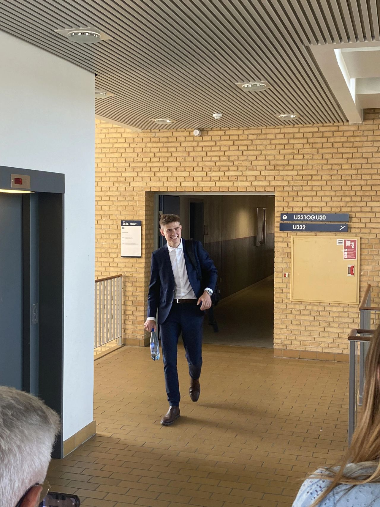

Experience
01. Arla Foods
IT Specialist, Hyper Automation (GenAI)
Working on turning the potential of GenAI into real business value — designing and implementing AI-driven solutions that automate processes, improve decision-making, and enhance user experiences across the organization. Focused on scaling automation and AI capabilities, bridging business needs with emerging technologies like Copilot, AI agents, and intelligent automation.
IT Graduate · Enterprise Architecture & Strategy / CIO Office
Drove strategic initiatives bridging business and IT: translating business needs into scalable AI solutions, advising on AI and automation initiatives, and leading projects from PoC ideation to MVP, including GenAI use cases.
IT Graduate · Data Scientist, Commercial ART
Worked as a Data Scientist with tools like Databricks and Power BI, and with data engineering through the standard Bronze-to-Gold pipeline layers, working closely with an architect on solution design.
Student Assistant, IT Department
02. Teaching
Tutor, GoTutor
Teaching Assistant, Aarhus University
Teaching assistant in Microeconomics II and Calculus Tau.